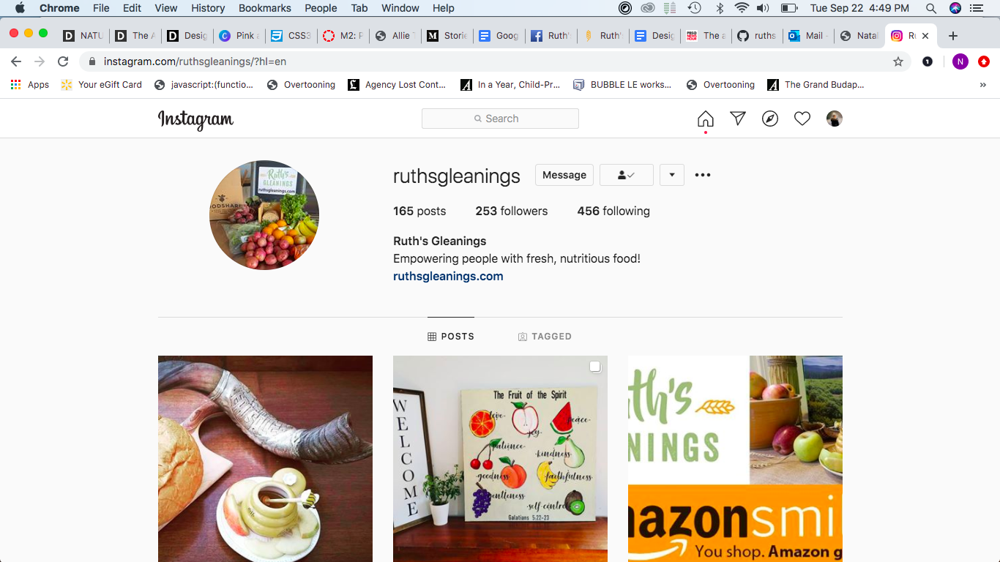
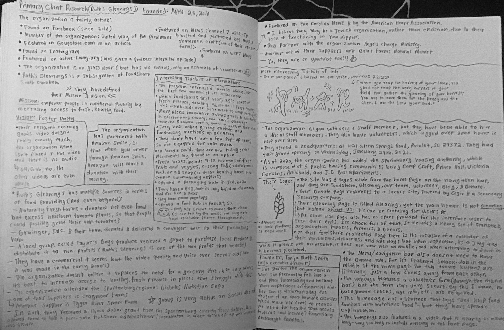
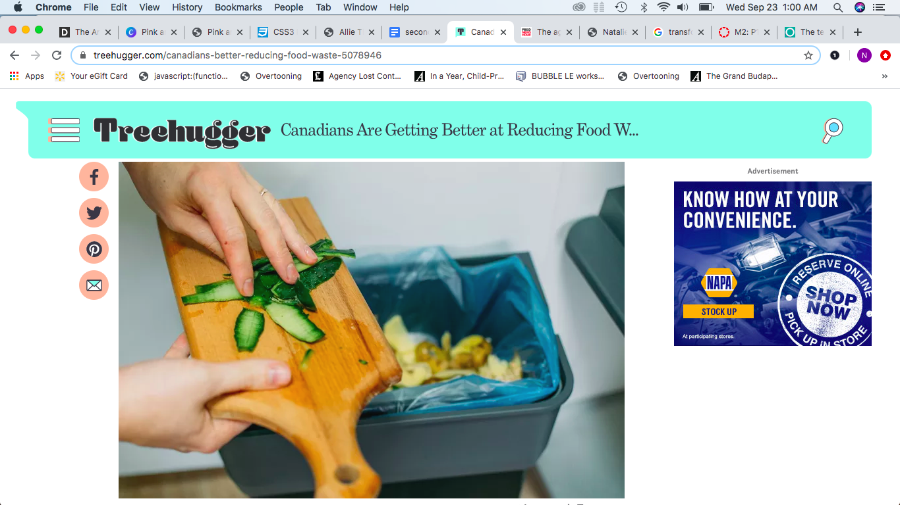
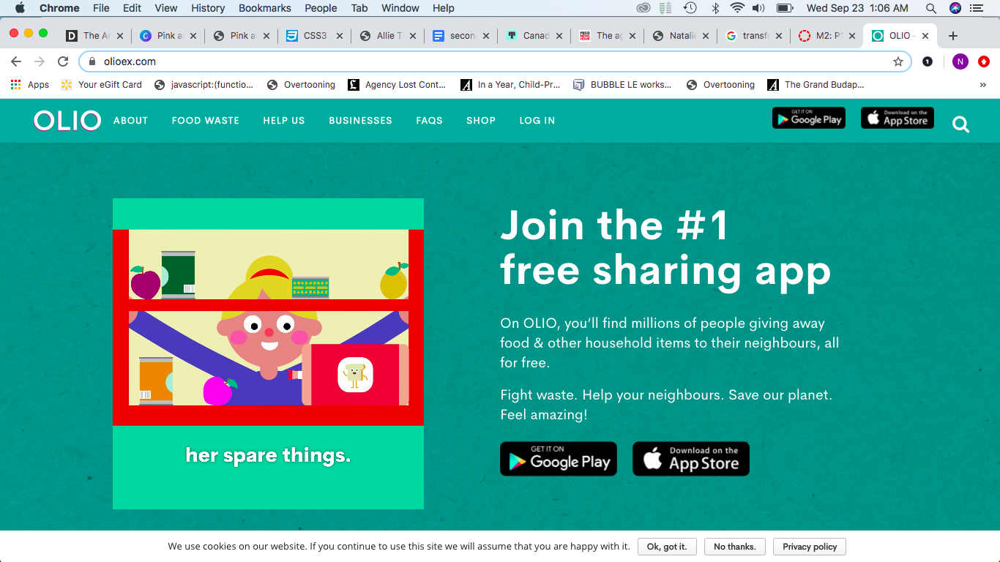

Research
The research portion of this project involved collecting primary and secondary research on and about Ruth's Gleanings.
Primary Client Research

Research on Ruth's Gleanings platform presence
The ultimate goal of Ruth’s gleanings is to empower people in nutritional poverty increasing access to fresh, healthy food. The organization’s main outlets, which they use as means to attempt to achieve their goals, consists primarily of their foodshare, gleaning, and volunteer services. For this initial research, I focused on better understanding these methods and looking into the aspects that were done successfully or needed revision on their platforms.
FoodShare Spartanburg
Ruth’s Gleanings runs a program/service known as Foodshare Spartanburg, which is one of many regional branches of FoodShare South Carolina. This program works to deliver bi-weekly boxes of produce containing 9 to 12 varieties of seasonal, and mostly regionally grown, fruits and vegetables. The box, providing nearly 15-20 lbs of produce, is regularly retailed at an estimated $20 to $30 dollars, however, the cost is intentionally reduced to either $15 dollars cash or $5 SNAP dollars to allow for low-income families to afford produce.
Gleaning
The gleaning aspect of Ruth’s Gleaning focuses on reclaiming excess fresh & healthy food, including produce, prepared meals, as well as perishable items that would otherwise be discarded, by businesses, farms, and independent donors alike. Through this, the organization is able to take steps towards eliminating the gap between food waste and nutritionally insecurity.
Volunteers
Ruth's Gleanings offers the option for people to join their volunteer team. Although the website doesn't specify what exactly volunteering responsibilities entail, based on context it seems that volunteers are tasked with delivery and packaging responsibilities
Education
Ruth's Gleanings wishes not only to provide healthy food assistance but also to address underlying issues and problems with food insecurity through educating and drawing awareness to the issue. The organization works towards this goal by hosting public events, attending conventions, and releasing informational media pertaining to the topic of lacking resources and obtainable access in the local area.

Various Notes
While conducting the primary research, I came about a variety of media pertaining to Ruth’s Gleanings including but not limited to an Instagram page, a Youtube Channel, a Facebook page, a blog site, local news reports and more. While reading and searching these platforms, I collected notes and tidbits of information that could hopefully benefit my understanding of the organization and execution of their web redesign.
Secondary Research
When tasked with finding research pertaining to gleaning, food waste, meal insecurity, or anything that could possibly inspire a solution for problems faced by Ruth’s Gleanings, an abundance of secondary sources emerged. The problem my organization faces is not limited to one local area but is rather found everywhere, United States and beyond. While searching, I came across numerous articles relating to either gleaning, combating food waste, healthy food scarcity, and more. Each and every source offered valuable new perspectives on tackling the issue or bringing awareness to the problem, making it difficult to filter through the massive amounts of available information on the issue. Since we are currently in a state of being that is heavily affected and influenced by Covid 19, many of the initial articles I came across focused primarily on how foodshare programs and gleaning organizations have handled continuing efforts in the wake of the need for newfound safety precautions. Some organizations and charities that originally functioned by having volunteers physically collect and pick produce from willing farm donors are finding it difficult to adapt to the new required measures created by Covid. Some choose to combat the problem by enforcing mask wearing and distancing when picking produce, others choose to focus efforts on sterilizing products, while some choose to expand distribution spaces to enable proper social distancing of recipients. Although Covid has created an onslaught of new problems towards how gleaning is handled, there are some silver lining effects of the pandemic on food waste. An Organization, known as Love Food Hate Waste, made the discovery that Canadians' shopping habits have changed, due to Corona. As of recent, shoppers shop less frequently, buy products in mas, and are increasingly embracing food-saving strategies. Although we cannot be certain these habits will continue post Covid, we can hope that the effects of the pandemic will enable long term change towards the mentality on food waste.
 Other organizations are taking on food waste and repurposing to new, incredible levels. In Sweden, researchers from the Swedish Centre for Resource Recovery, at the University of Borås, are working towards the development of converting food waste into valuable biogas, which can in turn be used in the production of animal feed or bio plastics.
Britain, facing a similar problem, is utilizing technology as well in hopes of eliminating their problem with food waste. One of their recent and seemingly successful methods is the implementation of a gleaning app that allows users and donors alike to post free available food available free for pickup via private messaging. This approach has seemed to find success, enabling its expansion to reach the U.S platform as of recent. However, awareness and usage of the app is not nearly as common here as it is in Britain, with few users and donors being American based.
 I was trying to stay away from pulling research from the root organization, Slow Food. However, that meant there were not many websites that had that focus or were even similar to it. So what I found was a blog post by She Knows that explained in detail what the slow movement is. It is well organized and clearly presents the information.
I was trying to stay away from pulling research from the root organization, Slow Food. However, that meant there were not many websites that had that focus or were even similar to it. So what I found was a blog post by She Knows that explained in detail what the slow movement is. It is well organized and clearly presents the information.
I used this blog post as a guideline for the level of clarity I would like the redesigned Slow Food Upstate website to have.
Slow Food in Popular Culture

An interesting facet of this research that I believe could be beneficial to Slow Food Upstate is that the slow food movement is making its way into popular culture.
In the newest season of the Netflix series Chef's Table, Cristina Martinez, a slow food advocate and chef, has an episode all to herself. I believe that introducing advocates of the slow food movement into widely watched shows could promote Slow Food's mission even more. This could translate to the chapter level as well.
 The Slow Food Upstate chapter could ask local chefs, who use the slow food method in their cooking, to give talks at events. That way, the community could learn interesting and efficient ways to prepare the produce they bought from the Earth Market.
The Slow Food Upstate chapter could ask local chefs, who use the slow food method in their cooking, to give talks at events. That way, the community could learn interesting and efficient ways to prepare the produce they bought from the Earth Market.
In my website redesign, I could list guest speakers in an accesible place so that the interested user could learn more about those speakers and where the event would be held.
Interviews
Due to multiple communication issues and failed attempts, I realized I would not be able to speak with anyone directly affiliated with/involved the Slow Food Upstate chapter. I decided to focus on a user demographic that would meet goal criteria and make use of the information Slow Food provides. I interviewed a second grade teacher and my mother, who has been interested in clean eating and local produce for a long time.
Educator and Mother

This link is a screenshot of the full interview with Ellen Oncu, a second grade teacher and single mother of two young children.
This interview was helpful because it showed the perspective of an educator who might want resources to teach her classroom about the slow food movement. An educator could also take her class to an event as a field trip. However, educational resources and information about events were not readily accessible. In addition to the difficulty finding educational resource material, Ms. Oncu expressed the need for more imagery on the site. I recognized a lack of imagery as a definite problem for the current Slow Food Upstate website. There is no imagery of the actual market and so there is no incentive for the user to visit or even begin to be interested.
Mother and Possible Membership Holder
This link is a screenshot of the second interview with Barbara Thompson.
While Ms. Oncu is a candidate for membership as well, Mrs. Thompson would be more likely to chose a membership. If the membership benefits were clarified and, for example, offered a deliverable subscription box of fresh, local produce, she would be inclined to become a member. Mrs. Thompson is the mother of five children, two of which are still at home. She is very busy and does not normally have time to visit a farmers market. But if there was a way for her to access that fresh produce at home, that would be ideal.
Overall, Mrs. Thompson expressed that her initial visit did not compel her to visit the site a second time. She also would like to see/attend family-friendly events to which to take her youngest child. Slow Food Upstate could host tours of the local farms to show the community where fresh and organic produce begins.